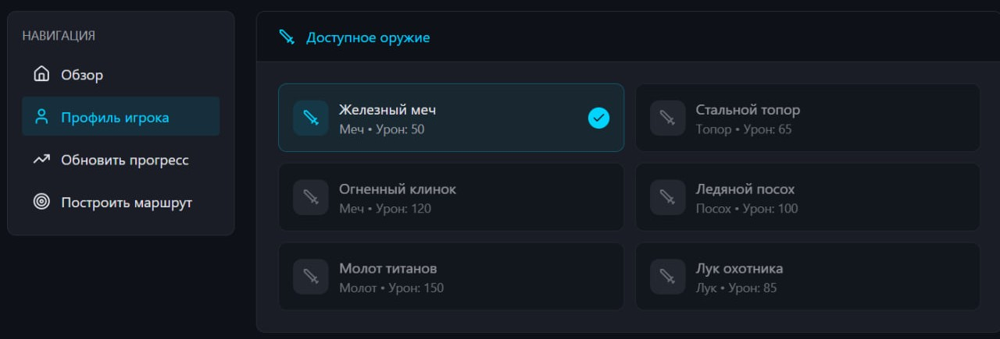

Проблема
- Гайды по играм не персонализированы: не учитывают ваши навыки, оружие, текущий прогресс
- Игроку сложно понять, сколько времени займёт цель и какой порядок шагов даст лучший шанс.
Цель проекта
Создать персональный планировщик прогресса для игр, который помогает игроку достигать конкретных целей с прогнозом времени и количества попыток.
Функциональные требования
- Ввод профиля
- Обновление прогресса вручную
- Получение двух альтернативных маршрутов для конкретной цели
Профиль игрока (оружие)
